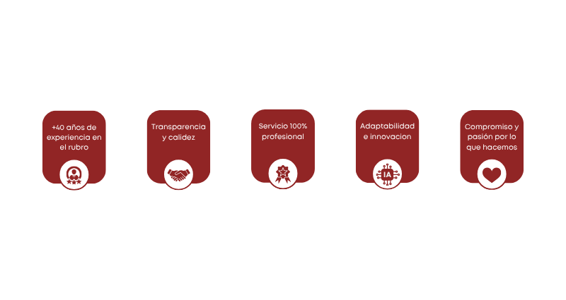

En Constantin & Asociados nos enfocamos en acompañar a nuestros clientes en el desarrollo y crecimiento de sus proyectos y empresas. Confiamos que el espíritu emprendedor es algo fundamental para el crecimiento y mejora de nuestra sociedad. Sabemos el enorme esfuerzo que implica crear algo inspirador desde cero, ya que muchas veces esto implica muchos desafíos y dilemas que van apareciendo a través del camino. Por eso nos propusimos desde nuestros comienzos ser un aliado en el que puedan confiar plenamente. A lo largo de nuestra trayectoria de más de 40 años, descubrimos que esto se logra a través de un compromiso férreo en nuestra vocación de servicio y de valorar por sobre todo a nuestros clientes, brindándoles un asesoramiento ejemplar y de calidad.
Nos convertimos en el aliado de tu empresa
"D' origine suisse depuis 1981, au service de nos clients"
Nuestro Estudio
Misión
Contribuir con el ejercicio profesional a través de nuestra vocación de servicio hacia la sociedad, enfocándonos en potenciar emprendedores e idealistas para el progreso de nuestra comunidad.
Visión
Nuestra meta es colaborar con el éxito y crecimiento de nuestros clientes.
Valores
Actitud de servicio, Innovación, Excelencia, Compromiso, Calidez y Pasión en todo lo que hacemos.
Por Qué Elegirnos
Lo Que Hacemos Mejor

Servicios Contables
Confeccionamos balances a medida para tu empresa, organizamos tus números y brindamos información clave para la toma de decisiones.
Servicios de Auditoría
Mejoramos la gestión de tu empresa, enfocándonos en el control y la calidad de los procesos.
Servicios Impositivos
Elaboramos un planeamiento para que cumplas con tus tributos de forma eficiente, adaptándonos a las necesidades de cada cliente.
Servicios Laborales
Nos ocupamos de tus liquidaciones de sueldos y te mantenemos actualizado con las últimas novedades en materia laboral.
Servicios Societarios
Te asesoramos para elegir el tipo societario más conveniente para tu proyecto.
Servicios Financieros
Ordenamos y mejoramos las finanzas de tu negocio para que sean sanas y acordes a tus objetivos.
Qué Dicen Nuestros Clientes
¿Cómo Podemos Empezar?

Nuestra Ubicación
Contactanos
CONSTANTIN & ASOCIADOS - CONTADORES PÚBLICOS
Av. San Martín 6528 - Piso 4 - A - (1419) CABA
Teléfono / WhatsApp: (54 911)-7660-6528